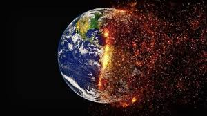
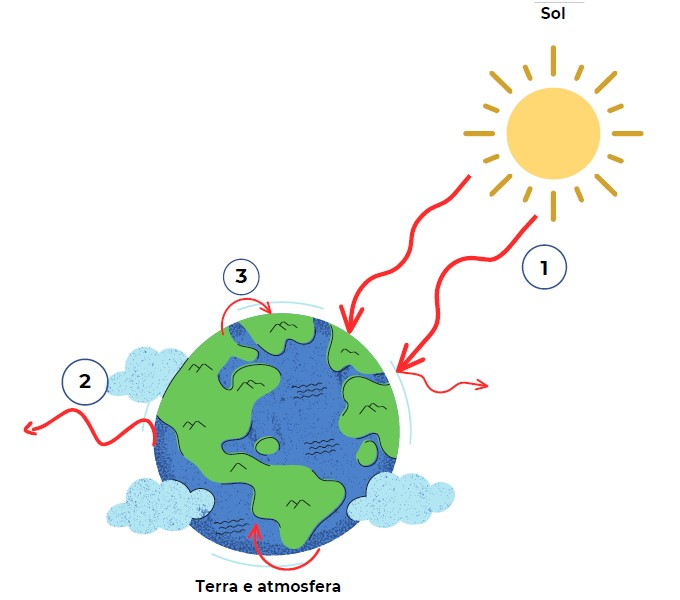
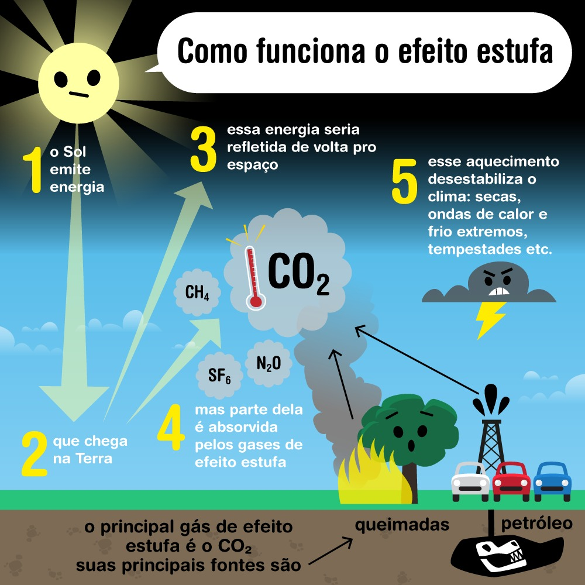

O aquecimento global designa o aumento das temperaturas médias do planeta ao longo dos
últimos tempos, o que, em tese, é causado pelas práticas humanas – embora existam discordâncias
quanto a isso no campo científico. A principal causa desse problema climático que afeta todo o planeta
é a intensificação do efeito estufa, fenômeno natural responsável pela manutenção do calor na Terra e
que vem apresentando uma maior intensidade em razão da poluição do ar resultante das práticas humanas.
Causas Do Aquecimento Global
As principais causas do aquecimento global estão relacionadas, para a maioria dos cientistas,
com as práticas humanas realizadas de maneira não sustentável, ou seja, sem garantir a existência dos recursos
e do meio ambiente para as gerações futuras. Assim, formas de degradação ao meio natural, como a poluição,
as queimadas e o desmatamento, estariam na lista dos principais elementos causadores desse problema climático.
O desmatamento das áreas naturais contribui para o aquecimento global no sentido de promover um desequilíbrio
climático decorrente da remoção da vegetação, que tem como função o controle das temperaturas e dos regimes de chuva.
A Floresta Amazônica, por exemplo, é uma grande fornecedora de umidade para a atmosfera, provendo um maior controle das
temperaturas e uma certa frequência de chuvas para boa parte do continente sul-americano, conforme estudos relacionados
com os chamados rios voadores. Se considerarmos essa dinâmica em termos mundiais, pode-se concluir que a remoção das florestas
contribui para o aumento das médias térmicas e para a redução dos índices de pluviosidade em vários lugares.
Consequências do aquecimento global
Os efeitos do aquecimento global são diversos e podem estar relacionados com a atmosfera, hidrosfera e também com a biosfera.
Podemos citar como consequência do aquecimento global, primeiramente, o fenômeno do degelo que vem ocorrendo nas calotas polares.
Com isso, a área de várias espécies animais, sobretudo no Ártico, está ficando cada vez mais diminuta, o que acarreta problemas ambientais
de ordem ecológica. Além disso, para muitos estudiosos, isso vem causando a elevação do nível dos oceanos,
embora esse fenômeno esteja mais associado ao degelo que ocorre na Antártida e também na Groenlândia.
Outro efeito ainda mais latente é o aumento das temperaturas, conforme já mencionado. Muitas espécies podem entrar em extinção,
além de a disponibilidade de água em várias partes do globo tornar-se cada vez menor em razão da maior ocorrência de secas em períodos mais prolongados.
Esse tipo de situação prejudica a oferta de recursos naturais para os seres vivos e a manutenção da cadeia alimentar. Com o aquecimento global,
fenômenos cíclicos e anomalias climáticas vêm tornando-se cada vez mais frequentes, tais como o El Niño, que, entre outras consequências,
proporciona secas severas em muitas regiões do globo.
Críticas ao aquecimento global
Não é consenso na comunidade científica a ocorrência do aquecimento global, nem mesmo as suas causas. Para muitos,
o aquecimento global, que seria uma “farsa”, não se baseia em fatos verdadeiramente científicos, causando certo alarmismo que não se justifica.
Em algumas posições, a existência do problema é até admitida, mas não tomada como um efeito das ações antrópicas.
Em outras perspectivas, não estaria acontecendo um aquecimento da Terra, mas sim um resfriamento rumo a uma glaciação.
Os chamados “céticos de clima” consideram que o gás carbônico não gera efeitos conclusivos sobre o clima, principalmente no sentido de intensificar
o efeito estufa. Além disso, mesmo que esses efeitos climáticos ocorressem pelos gases-estufa, eles seriam mínimos,
pois os principais reguladores do clima em ordem global são os raios solares e os oceanos.

Efeito Estufa
O efeito estufa é um fenômeno natural de extrema importância para a existência de vida na Terra.
É responsável por manter as temperaturas médias globais, evitando que haja grande amplitude térmica e possibilitando o desenvolvimento dos seres vivos.
Esse fenômeno, no entanto, tem sido agravado pela ação antrópica, que tem elevado as emissões de gases de efeito estufa à atmosfera,
provocando alterações climáticas em todo o planeta. Essa grande concentração de gases dificulta que o calor seja devolvido ao espaço,
aumentando, consequentemente, as temperaturas do planeta.

Como Funciona o Efeito Estufa?

O Sol emite calor à Terra. Parte desse calor é absorvida pela superfície terrestre e pelos oceanos, outra parte é devolvida ao espaço.
Contudo, uma parcela da radiação solar irradiada pela superfície fica retida na atmosfera em decorrência da presença de gases de efeito estufa,
que impedem que esse calor seja devolvido totalmente ao espaço. Dessa forma, mantém-se o equilíbrio energético e evitam-se grandes amplitudes térmicas.
Para exemplificar melhor, imagine um carro estacionado em um dia bastante ensolarado. Os raios solares atravessam os vidros e aquecem o interior do veículo.
O calor tende a ser devolvido para fora do carro, saindo pelo vidro, contudo encontra dificuldades. Assim, parte do calor fica retido no interior do carro,
mantendo-o aquecido.
Fazendo uma analogia, os gases de efeito estufa presentes na atmosfera funcionam como o vidro do carro,
permitindo a entrada da radiação solar e dificultando que toda ela seja devolvida ao espaço.
Gases do Efeito Estufa
Existem quatro principais gases de efeito estufa. São eles:
Dióxido de carbono:
É o gás de maior abundância na atmosfera. A queima de combustíveis fósseis
é uma das principais atividades responsáveis por emitir esse gás. Desde a era industrial,
a quantidade de dióxido de carbono na atmosfera aumentou, aproximadamente, 35%.
Gás metano:
É o segundo gás que mais contribui para o aumento das temperaturas globais,
com poder 21 vezes maior que o dióxido de carbono. Aproximadamente 60% da emissão de
metano provém de ações humanas ligadas a aterros sanitários e lixões. Além disso,
é eliminado por meio da digestão de ruminantes.
Óxido nitroso:
Pode ser emitido à atmosfera por meio de bactérias no solo ou no oceano.
Atividades agrícolas, como uso de fertilizantes nitrogenados, também são fontes desse gás.
O óxido nitroso pode colaborar cerca de 298 vezes mais que o dióxido de carbono para o aumento
das temperaturas.
Gases fluoretados: Os gases fluoretados são produzidos pelo homem a fim de atender às
necessidades industriais. São exemplos desses gases: hidrofluorcarbonetos, usados em
sistemas de aquecimento e refrigeração; hexafluoreto de enxofre, usado na indústria eletrônica;
perfluorcarbono, emitido na produção de alumínio; e os clorofluorcarbonos (CFCs),
responsáveis pela destruição da camada de ozônio.
Vapor d'água:
Bastante presente na atmosfera, é responsável por mais da metade do efeito estufa.
O vapor d'água capta o calor irradiado pela superfície terrestre, distribuindo-o para todas as
direções e aquecendo a superfície.